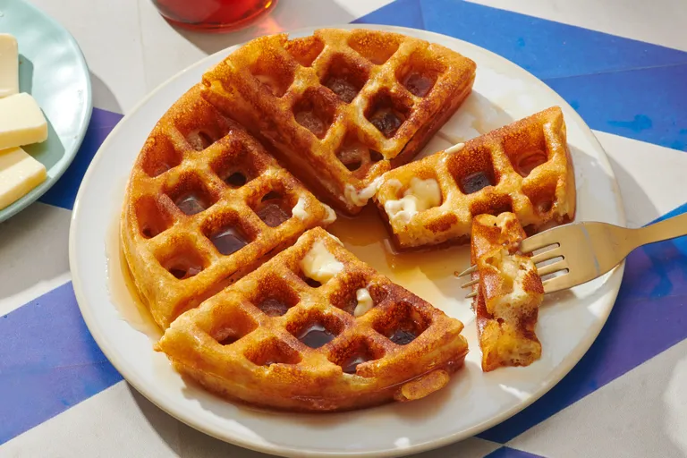

Classic waffles
Home

Description:
Simple pantry ingredients mix up quickly in this easy batter that can be used right away or stored in the refrigerator for up to a week. Serve waffles hot with whipped cream and fresh fruit or with butter and maple syrup for either breakfast, brunch, or a snack.
Ingredients
Original recipe (1X) yields 6 servings
- 2 Large eggs
- 2 cups all-purpose flour
- 1 ¾ cups milk
- ½ cup vegetable oil
- 1 tablespoon white sugar
- 4 teaspoons baking powder
- ¼ teaspoon salt
- ½ teaspoon vanilla extract
- nonstick cooking spray
Click Here For more information on every ingediant!
Steps
Step 1
- Gather all ingredients. Preheat a waffle iron according to manufacturer's instructions.
Step 2
- Whisk eggs in a large bowl until light and fluffy. Add flour, milk, and vegetable oil and mix to combine. Whisk in sugar, then mix in baking powder, salt, and vanilla just until smooth, being careful not to overmix.
Step 3
- Spray the preheated waffle iron with nonstick spray. Pour batter onto the hot waffle iron and cook until golden brown and the iron stops steaming, 3 to 5 minutes.
Step 4
- Serve and enjoy!
Nutrition Facts
382
Calories
22g
Fat
38g
Carbs
9g
Protein
Return back to the top or click Here to return home for more amazing recipes!